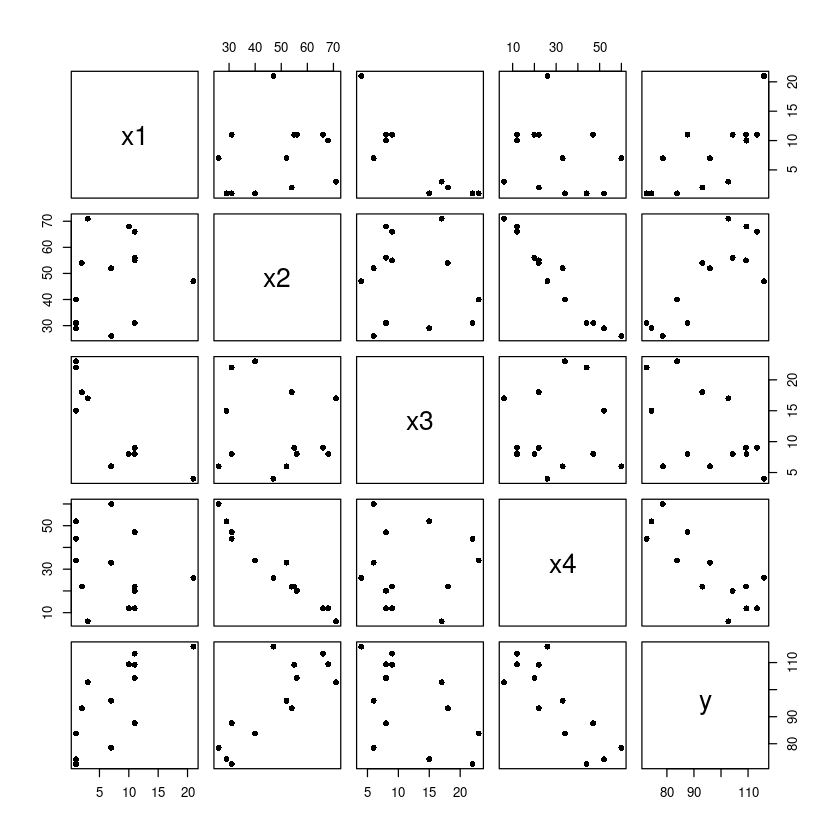

dt <- data.frame(
x1 = c(7,1,11,11,7,11,3,1,2,21,1,11,10),
x2 = c(26,29,56,31,52,55,71,31,54,47,40,66,68),
x3 = c(6,15,8,8,6,9,17,22,18,4,23,9,8),
x4 = c(60,52,20,47,33,22,6,44,22,26,34,12,12),
y = c(78.5,74.3,104.3,87.6,95.9,109.2,102.7,72.5,93.1,115.9,83.8,113.3,109.4)
)chapter 11 변수선택
변수선택
산점도
pairs(dt, pch=16)
x2/x4 음의 상관관계 보임 등 확인
상관게수
cor(dt)| x1 | x2 | x3 | x4 | y | |
|---|---|---|---|---|---|
| x1 | 1.0000000 | 0.2285795 | -0.8241338 | -0.2454451 | 0.7307175 |
| x2 | 0.2285795 | 1.0000000 | -0.1392424 | -0.9729550 | 0.8162526 |
| x3 | -0.8241338 | -0.1392424 | 1.0000000 | 0.0295370 | -0.5346707 |
| x4 | -0.2454451 | -0.9729550 | 0.0295370 | 1.0000000 | -0.8213050 |
| y | 0.7307175 | 0.8162526 | -0.5346707 | -0.8213050 | 1.0000000 |
x1/x3 cor 크고
y와의 상관계수 중 x4가 가장 큼
Full model
m <- lm(y~., dt) ##FMsummary(m)
Call:
lm(formula = y ~ ., data = dt)
Residuals:
Min 1Q Median 3Q Max
-3.1750 -1.6709 0.2508 1.3783 3.9254
Coefficients:
Estimate Std. Error t value Pr(>|t|)
(Intercept) 62.4054 70.0710 0.891 0.3991
x1 1.5511 0.7448 2.083 0.0708 .
x2 0.5102 0.7238 0.705 0.5009
x3 0.1019 0.7547 0.135 0.8959
x4 -0.1441 0.7091 -0.203 0.8441
---
Signif. codes: 0 ‘***’ 0.001 ‘**’ 0.01 ‘*’ 0.05 ‘.’ 0.1 ‘ ’ 1
Residual standard error: 2.446 on 8 degrees of freedom
Multiple R-squared: 0.9824, Adjusted R-squared: 0.9736
F-statistic: 111.5 on 4 and 8 DF, p-value: 4.756e-07x1만 유의함, 나머지는 유의하지 않음
모형이 복잡해지면 분산이 커져서 유의미하지 않다는 결과 나올 수도
아니면 선형변수간 상관관계가 높을때 (모형은 유의하지만 변수가 유의하지 않음-> 다중공선성 존재, 변수선택과정 필요
t value squre = F value -> 가장 작은 거 찾았더니 x3, x3이 가장 유의하지 않음 -> 제거
anova(m)| Df | Sum Sq | Mean Sq | F value | Pr(>F) | |
|---|---|---|---|---|---|
| <int> | <dbl> | <dbl> | <dbl> | <dbl> | |
| x1 | 1 | 1450.0763281 | 1450.0763281 | 242.36791816 | 2.887559e-07 |
| x2 | 1 | 1207.7822656 | 1207.7822656 | 201.87052753 | 5.863323e-07 |
| x3 | 1 | 9.7938691 | 9.7938691 | 1.63696188 | 2.366003e-01 |
| x4 | 1 | 0.2469747 | 0.2469747 | 0.04127972 | 8.440715e-01 |
| Residuals | 8 | 47.8636394 | 5.9829549 | NA | NA |
후진제거법
summary(m) #x3 제거
Call:
lm(formula = y ~ ., data = dt)
Residuals:
Min 1Q Median 3Q Max
-3.1750 -1.6709 0.2508 1.3783 3.9254
Coefficients:
Estimate Std. Error t value Pr(>|t|)
(Intercept) 62.4054 70.0710 0.891 0.3991
x1 1.5511 0.7448 2.083 0.0708 .
x2 0.5102 0.7238 0.705 0.5009
x3 0.1019 0.7547 0.135 0.8959
x4 -0.1441 0.7091 -0.203 0.8441
---
Signif. codes: 0 ‘***’ 0.001 ‘**’ 0.01 ‘*’ 0.05 ‘.’ 0.1 ‘ ’ 1
Residual standard error: 2.446 on 8 degrees of freedom
Multiple R-squared: 0.9824, Adjusted R-squared: 0.9736
F-statistic: 111.5 on 4 and 8 DF, p-value: 4.756e-072.083^2
4.338889
drop1(m, test = "F")| Df | Sum of Sq | RSS | AIC | F value | Pr(>F) | |
|---|---|---|---|---|---|---|
| <dbl> | <dbl> | <dbl> | <dbl> | <dbl> | <dbl> | |
| <none> | NA | NA | 47.86364 | 26.94429 | NA | NA |
| x1 | 1 | 25.9509114 | 73.81455 | 30.57588 | 4.33747400 | 0.07082169 |
| x2 | 1 | 2.9724782 | 50.83612 | 25.72755 | 0.49682444 | 0.50090110 |
| x3 | 1 | 0.1090900 | 47.97273 | 24.97388 | 0.01823347 | 0.89592269 |
| x4 | 1 | 0.2469747 | 48.11061 | 25.01120 | 0.04127972 | 0.84407147 |
각 값은 해당 변수가 없을떄의 결과임
RSS는 SSE임 - 47.86364 모두 포함할 떄의 SSE, - 각 줄은 해당 변수가 없을 때의 SSE값임(차이가 클수록 의미있는 변수) - 25.9509114+ 47.86364=73.81455
AIC
F value 부분 f 검정의 f 값
m1 <- update(m, ~ . -x3)summary(m1) #x4 제거
Call:
lm(formula = y ~ x1 + x2 + x4, data = dt)
Residuals:
Min 1Q Median 3Q Max
-3.0919 -1.8016 0.2562 1.2818 3.8982
Coefficients:
Estimate Std. Error t value Pr(>|t|)
(Intercept) 71.6483 14.1424 5.066 0.000675 ***
x1 1.4519 0.1170 12.410 5.78e-07 ***
x2 0.4161 0.1856 2.242 0.051687 .
x4 -0.2365 0.1733 -1.365 0.205395
---
Signif. codes: 0 ‘***’ 0.001 ‘**’ 0.01 ‘*’ 0.05 ‘.’ 0.1 ‘ ’ 1
Residual standard error: 2.309 on 9 degrees of freedom
Multiple R-squared: 0.9823, Adjusted R-squared: 0.9764
F-statistic: 166.8 on 3 and 9 DF, p-value: 3.323e-08부분 F 검정, t value 가장 작은 것은 x4임
alpha_B = 0.05라 놓고 p값중 이보다 크거나 작은 거 찾기
drop1(m1, test = "F")| Df | Sum of Sq | RSS | AIC | F value | Pr(>F) | |
|---|---|---|---|---|---|---|
| <dbl> | <dbl> | <dbl> | <dbl> | <dbl> | <dbl> | |
| <none> | NA | NA | 47.97273 | 24.97388 | NA | NA |
| x1 | 1 | 820.907402 | 868.88013 | 60.62933 | 154.007635 | 5.780764e-07 |
| x2 | 1 | 26.789383 | 74.76211 | 28.74170 | 5.025865 | 5.168735e-02 |
| x4 | 1 | 9.931754 | 57.90448 | 25.41999 | 1.863262 | 2.053954e-01 |
m2 <- update(m1, ~ . -x4)summary(m2) #x4 제거
Call:
lm(formula = y ~ x1 + x2, data = dt)
Residuals:
Min 1Q Median 3Q Max
-2.893 -1.574 -1.302 1.363 4.048
Coefficients:
Estimate Std. Error t value Pr(>|t|)
(Intercept) 52.57735 2.28617 23.00 5.46e-10 ***
x1 1.46831 0.12130 12.11 2.69e-07 ***
x2 0.66225 0.04585 14.44 5.03e-08 ***
---
Signif. codes: 0 ‘***’ 0.001 ‘**’ 0.01 ‘*’ 0.05 ‘.’ 0.1 ‘ ’ 1
Residual standard error: 2.406 on 10 degrees of freedom
Multiple R-squared: 0.9787, Adjusted R-squared: 0.9744
F-statistic: 229.5 on 2 and 10 DF, p-value: 4.407e-09t value 보니 x1이 가장 작지만 유의확률 작음 제거 불가, 과정 멈추기
drop1(m2, test = "F")| Df | Sum of Sq | RSS | AIC | F value | Pr(>F) | |
|---|---|---|---|---|---|---|
| <dbl> | <dbl> | <dbl> | <dbl> | <dbl> | <dbl> | |
| <none> | NA | NA | 57.90448 | 25.41999 | NA | NA |
| x1 | 1 | 848.4319 | 906.33634 | 59.17799 | 146.5227 | 2.692212e-07 |
| x2 | 1 | 1207.7823 | 1265.68675 | 63.51947 | 208.5818 | 5.028960e-08 |
##### 전진선택법
m0 = lm(y ~ 1, data = dt)add1(m0,
scope = y ~ x1 + x2 + x3+ x4,
test = "F") ## x4추가| Df | Sum of Sq | RSS | AIC | F value | Pr(>F) | |
|---|---|---|---|---|---|---|
| <dbl> | <dbl> | <dbl> | <dbl> | <dbl> | <dbl> | |
| <none> | NA | NA | 2715.7631 | 71.44443 | NA | NA |
| x1 | 1 | 1450.0763 | 1265.6867 | 63.51947 | 12.602518 | 0.0045520446 |
| x2 | 1 | 1809.4267 | 906.3363 | 59.17799 | 21.960605 | 0.0006648249 |
| x3 | 1 | 776.3626 | 1939.4005 | 69.06740 | 4.403417 | 0.0597623242 |
| x4 | 1 | 1831.8962 | 883.8669 | 58.85164 | 22.798520 | 0.0005762318 |
절편만 있는 모형에서 시작
RSS는 SST로 시작(설명 변수 없는 SSE니까) 사실 SSE
x4의 f value가장 큼
m1 <- update(m0, ~ . +x4)summary(m1)
Call:
lm(formula = y ~ x4, data = dt)
Residuals:
Min 1Q Median 3Q Max
-12.589 -8.228 1.495 4.726 17.524
Coefficients:
Estimate Std. Error t value Pr(>|t|)
(Intercept) 117.5679 5.2622 22.342 1.62e-10 ***
x4 -0.7382 0.1546 -4.775 0.000576 ***
---
Signif. codes: 0 ‘***’ 0.001 ‘**’ 0.01 ‘*’ 0.05 ‘.’ 0.1 ‘ ’ 1
Residual standard error: 8.964 on 11 degrees of freedom
Multiple R-squared: 0.6745, Adjusted R-squared: 0.645
F-statistic: 22.8 on 1 and 11 DF, p-value: 0.0005762add1(m1,
scope = y ~ x1 + x2 + x3+ x4,
test = "F") ## x1추가| Df | Sum of Sq | RSS | AIC | F value | Pr(>F) | |
|---|---|---|---|---|---|---|
| <dbl> | <dbl> | <dbl> | <dbl> | <dbl> | <dbl> | |
| <none> | NA | NA | 883.86692 | 58.85164 | NA | NA |
| x1 | 1 | 809.10480 | 74.76211 | 28.74170 | 108.2239093 | 1.105281e-06 |
| x2 | 1 | 14.98679 | 868.88013 | 60.62933 | 0.1724839 | 6.866842e-01 |
| x3 | 1 | 708.12891 | 175.73800 | 39.85258 | 40.2945802 | 8.375467e-05 |
m2 <- update(m1, ~ . +x1)summary(m2)
Call:
lm(formula = y ~ x4 + x1, data = dt)
Residuals:
Min 1Q Median 3Q Max
-5.0234 -1.4737 0.1371 1.7305 3.7701
Coefficients:
Estimate Std. Error t value Pr(>|t|)
(Intercept) 103.09738 2.12398 48.54 3.32e-13 ***
x4 -0.61395 0.04864 -12.62 1.81e-07 ***
x1 1.43996 0.13842 10.40 1.11e-06 ***
---
Signif. codes: 0 ‘***’ 0.001 ‘**’ 0.01 ‘*’ 0.05 ‘.’ 0.1 ‘ ’ 1
Residual standard error: 2.734 on 10 degrees of freedom
Multiple R-squared: 0.9725, Adjusted R-squared: 0.967
F-statistic: 176.6 on 2 and 10 DF, p-value: 1.581e-08add1(m2,
scope = y ~ x1 + x2 + x3+ x4,
test = "F") ## stop| Df | Sum of Sq | RSS | AIC | F value | Pr(>F) | |
|---|---|---|---|---|---|---|
| <dbl> | <dbl> | <dbl> | <dbl> | <dbl> | <dbl> | |
| <none> | NA | NA | 74.76211 | 28.74170 | NA | NA |
| x2 | 1 | 26.78938 | 47.97273 | 24.97388 | 5.025865 | 0.05168735 |
| x3 | 1 | 23.92599 | 50.83612 | 25.72755 | 4.235846 | 0.06969226 |
모두 0.05보다 p값이 큼, 멈추자
단계적선택법
m0 = lm(y ~ 1, data = dt)add1(m0,
scope = y ~ x1 + x2 + x3+ x4,
test = "F") ## x4추가| Df | Sum of Sq | RSS | AIC | F value | Pr(>F) | |
|---|---|---|---|---|---|---|
| <dbl> | <dbl> | <dbl> | <dbl> | <dbl> | <dbl> | |
| <none> | NA | NA | 2715.7631 | 71.44443 | NA | NA |
| x1 | 1 | 1450.0763 | 1265.6867 | 63.51947 | 12.602518 | 0.0045520446 |
| x2 | 1 | 1809.4267 | 906.3363 | 59.17799 | 21.960605 | 0.0006648249 |
| x3 | 1 | 776.3626 | 1939.4005 | 69.06740 | 4.403417 | 0.0597623242 |
| x4 | 1 | 1831.8962 | 883.8669 | 58.85164 | 22.798520 | 0.0005762318 |
m1 <- update(m0, ~ . +x4)summary(m1)
Call:
lm(formula = y ~ x4, data = dt)
Residuals:
Min 1Q Median 3Q Max
-12.589 -8.228 1.495 4.726 17.524
Coefficients:
Estimate Std. Error t value Pr(>|t|)
(Intercept) 117.5679 5.2622 22.342 1.62e-10 ***
x4 -0.7382 0.1546 -4.775 0.000576 ***
---
Signif. codes: 0 ‘***’ 0.001 ‘**’ 0.01 ‘*’ 0.05 ‘.’ 0.1 ‘ ’ 1
Residual standard error: 8.964 on 11 degrees of freedom
Multiple R-squared: 0.6745, Adjusted R-squared: 0.645
F-statistic: 22.8 on 1 and 11 DF, p-value: 0.0005762add1(m1,
scope = y ~ x1 + x2 + x3+ x4,
test = "F") ## x1추가| Df | Sum of Sq | RSS | AIC | F value | Pr(>F) | |
|---|---|---|---|---|---|---|
| <dbl> | <dbl> | <dbl> | <dbl> | <dbl> | <dbl> | |
| <none> | NA | NA | 883.86692 | 58.85164 | NA | NA |
| x1 | 1 | 809.10480 | 74.76211 | 28.74170 | 108.2239093 | 1.105281e-06 |
| x2 | 1 | 14.98679 | 868.88013 | 60.62933 | 0.1724839 | 6.866842e-01 |
| x3 | 1 | 708.12891 | 175.73800 | 39.85258 | 40.2945802 | 8.375467e-05 |
m2 <- update(m1, ~ . +x1)summary(m2) #제거 없음
Call:
lm(formula = y ~ x4 + x1, data = dt)
Residuals:
Min 1Q Median 3Q Max
-5.0234 -1.4737 0.1371 1.7305 3.7701
Coefficients:
Estimate Std. Error t value Pr(>|t|)
(Intercept) 103.09738 2.12398 48.54 3.32e-13 ***
x4 -0.61395 0.04864 -12.62 1.81e-07 ***
x1 1.43996 0.13842 10.40 1.11e-06 ***
---
Signif. codes: 0 ‘***’ 0.001 ‘**’ 0.01 ‘*’ 0.05 ‘.’ 0.1 ‘ ’ 1
Residual standard error: 2.734 on 10 degrees of freedom
Multiple R-squared: 0.9725, Adjusted R-squared: 0.967
F-statistic: 176.6 on 2 and 10 DF, p-value: 1.581e-08add1(m2,
scope = y ~ x1 + x2 + x3+ x4,
test = "F") ## x2추가| Df | Sum of Sq | RSS | AIC | F value | Pr(>F) | |
|---|---|---|---|---|---|---|
| <dbl> | <dbl> | <dbl> | <dbl> | <dbl> | <dbl> | |
| <none> | NA | NA | 74.76211 | 28.74170 | NA | NA |
| x2 | 1 | 26.78938 | 47.97273 | 24.97388 | 5.025865 | 0.05168735 |
| x3 | 1 | 23.92599 | 50.83612 | 25.72755 | 4.235846 | 0.06969226 |
m3 <- update(m2, ~ . +x2)summary(m3) #x4 제거
Call:
lm(formula = y ~ x4 + x1 + x2, data = dt)
Residuals:
Min 1Q Median 3Q Max
-3.0919 -1.8016 0.2562 1.2818 3.8982
Coefficients:
Estimate Std. Error t value Pr(>|t|)
(Intercept) 71.6483 14.1424 5.066 0.000675 ***
x4 -0.2365 0.1733 -1.365 0.205395
x1 1.4519 0.1170 12.410 5.78e-07 ***
x2 0.4161 0.1856 2.242 0.051687 .
---
Signif. codes: 0 ‘***’ 0.001 ‘**’ 0.01 ‘*’ 0.05 ‘.’ 0.1 ‘ ’ 1
Residual standard error: 2.309 on 9 degrees of freedom
Multiple R-squared: 0.9823, Adjusted R-squared: 0.9764
F-statistic: 166.8 on 3 and 9 DF, p-value: 3.323e-08m4 <- update(m3, ~ . -x4)add1(m4,
scope = y ~ x1 + x2 + x3+ x4,
test = "F") #stop| Df | Sum of Sq | RSS | AIC | F value | Pr(>F) | |
|---|---|---|---|---|---|---|
| <dbl> | <dbl> | <dbl> | <dbl> | <dbl> | <dbl> | |
| <none> | NA | NA | 57.90448 | 25.41999 | NA | NA |
| x3 | 1 | 9.793869 | 48.11061 | 25.01120 | 1.832128 | 0.2088895 |
| x4 | 1 | 9.931754 | 47.97273 | 24.97388 | 1.863262 | 0.2053954 |
#install.packages("leaps")library(leaps)fit<-regsubsets(y~., data=dt, nbest=1,nvmax=4,
# method=c("exhaustive","backward",
# "forward", "seqrep")
method='forward',
)full model, nbest = 1개만 추가 nvmax 최대 4개 포함 가능
a <- summary(fit)str(a)List of 8
$ which : logi [1:4, 1:5] TRUE TRUE TRUE TRUE FALSE TRUE ...
..- attr(*, "dimnames")=List of 2
.. ..$ : chr [1:4] "1" "2" "3" "4"
.. ..$ : chr [1:5] "(Intercept)" "x1" "x2" "x3" ...
$ rsq : num [1:4] 0.675 0.972 0.982 0.982
$ rss : num [1:4] 883.9 74.8 48 47.9
$ adjr2 : num [1:4] 0.645 0.967 0.976 0.974
$ cp : num [1:4] 138.73 5.5 3.02 5
$ bic : num [1:4] -9.46 -39.01 -42.21 -39.68
$ outmat: chr [1:4, 1:4] " " "*" "*" "*" ...
..- attr(*, "dimnames")=List of 2
.. ..$ : chr [1:4] "1 ( 1 )" "2 ( 1 )" "3 ( 1 )" "4 ( 1 )"
.. ..$ : chr [1:4] "x1" "x2" "x3" "x4"
$ obj :List of 28
..$ np : int 5
..$ nrbar : int 10
..$ d : num [1:5] 13 3362 390.2 154.7 10.5
..$ rbar : num [1:10] 30 7.4615 48.1538 11.7692 -0.0863 ...
..$ thetab : num [1:5] 95.423 -0.738 1.44 0.416 0.102
..$ first : int 2
..$ last : int 5
..$ vorder : int [1:5] 1 5 2 3 4
..$ tol : num [1:5] 1.80e-09 9.67e-08 2.36e-08 1.19e-07 3.72e-08
..$ rss : num [1:5] 2715.8 883.9 74.8 48 47.9
..$ bound : num [1:5] 2715.8 1265.7 57.9 48.1 47.9
..$ nvmax : int 5
..$ ress : num [1:5, 1] 2715.8 883.9 74.8 48 47.9
..$ ir : int 5
..$ nbest : num 1
..$ lopt : int [1:15, 1] 1 1 5 1 5 2 1 5 2 3 ...
..$ il : int 15
..$ ier : int 0
..$ xnames : chr [1:5] "(Intercept)" "x1" "x2" "x3" ...
..$ method : chr "forward"
..$ force.in : Named logi [1:5] TRUE FALSE FALSE FALSE FALSE
.. ..- attr(*, "names")= chr [1:5] "" "x1" "x2" "x3" ...
..$ force.out: Named logi [1:5] FALSE FALSE FALSE FALSE FALSE
.. ..- attr(*, "names")= chr [1:5] "" "x1" "x2" "x3" ...
..$ sserr : num 47.9
..$ intercept: logi TRUE
..$ lindep : logi [1:5] FALSE FALSE FALSE FALSE FALSE
..$ nullrss : num 2716
..$ nn : int 13
..$ call : language regsubsets.formula(y ~ ., data = dt, nbest = 1, nvmax = 4, method = "forward", )
..- attr(*, "class")= chr "regsubsets"
- attr(*, "class")= chr "summary.regsubsets"with(summary(fit),
round(cbind(which,rss,rsq,adjr2, cp, bic),3))| (Intercept) | x1 | x2 | x3 | x4 | rss | rsq | adjr2 | cp | bic | |
|---|---|---|---|---|---|---|---|---|---|---|
| 1 | 1 | 0 | 0 | 0 | 1 | 883.867 | 0.675 | 0.645 | 138.731 | -9.463 |
| 2 | 1 | 1 | 0 | 0 | 1 | 74.762 | 0.972 | 0.967 | 5.496 | -39.008 |
| 3 | 1 | 1 | 1 | 0 | 1 | 47.973 | 0.982 | 0.976 | 3.018 | -42.211 |
| 4 | 1 | 1 | 1 | 1 | 1 | 47.864 | 0.982 | 0.974 | 5.000 | -39.675 |
설명변수 하나 썼을때, 2개 썼을때,,, 선택되는 변수들
설명변수2개.3개일때 Radj별로 차이 없어서 BIC 기준으로 2번째 꺼 선택
cp <= p+1(각 줄의 cp가 2,3,4,5보다 커야 함) -> 2번째꺼 선택!
step- r 기본 함수
m은 꼭 full model로 적어주기
###Backward - AIC
model_back = step(m, direction = "backward")Start: AIC=26.94
y ~ x1 + x2 + x3 + x4
Df Sum of Sq RSS AIC
- x3 1 0.1091 47.973 24.974
- x4 1 0.2470 48.111 25.011
- x2 1 2.9725 50.836 25.728
<none> 47.864 26.944
- x1 1 25.9509 73.815 30.576
Step: AIC=24.97
y ~ x1 + x2 + x4
Df Sum of Sq RSS AIC
<none> 47.97 24.974
- x4 1 9.93 57.90 25.420
- x2 1 26.79 74.76 28.742
- x1 1 820.91 868.88 60.629AIC 가장 작게하는 모형 기준으로 정렬되어 있음
24.97 가장 작아 최종 모형 결정됌
summary(model_back)
Call:
lm(formula = y ~ x1 + x2 + x4, data = dt)
Residuals:
Min 1Q Median 3Q Max
-3.0919 -1.8016 0.2562 1.2818 3.8982
Coefficients:
Estimate Std. Error t value Pr(>|t|)
(Intercept) 71.6483 14.1424 5.066 0.000675 ***
x1 1.4519 0.1170 12.410 5.78e-07 ***
x2 0.4161 0.1856 2.242 0.051687 .
x4 -0.2365 0.1733 -1.365 0.205395
---
Signif. codes: 0 ‘***’ 0.001 ‘**’ 0.01 ‘*’ 0.05 ‘.’ 0.1 ‘ ’ 1
Residual standard error: 2.309 on 9 degrees of freedom
Multiple R-squared: 0.9823, Adjusted R-squared: 0.9764
F-statistic: 166.8 on 3 and 9 DF, p-value: 3.323e-08###Forward - AIC
model_forward = step(
m0,
scope = y ~ x1 + x2 + x3+ x4,
direction = "forward")Start: AIC=71.44
y ~ 1
Df Sum of Sq RSS AIC
+ x4 1 1831.90 883.87 58.852
+ x2 1 1809.43 906.34 59.178
+ x1 1 1450.08 1265.69 63.519
+ x3 1 776.36 1939.40 69.067
<none> 2715.76 71.444
Step: AIC=58.85
y ~ x4
Df Sum of Sq RSS AIC
+ x1 1 809.10 74.76 28.742
+ x3 1 708.13 175.74 39.853
<none> 883.87 58.852
+ x2 1 14.99 868.88 60.629
Step: AIC=28.74
y ~ x4 + x1
Df Sum of Sq RSS AIC
+ x2 1 26.789 47.973 24.974
+ x3 1 23.926 50.836 25.728
<none> 74.762 28.742
Step: AIC=24.97
y ~ x4 + x1 + x2
Df Sum of Sq RSS AIC
<none> 47.973 24.974
+ x3 1 0.10909 47.864 26.944정해진 식에서 설명변수만 추가하고
summary(model_forward)
Call:
lm(formula = y ~ x4 + x1 + x2, data = dt)
Residuals:
Min 1Q Median 3Q Max
-3.0919 -1.8016 0.2562 1.2818 3.8982
Coefficients:
Estimate Std. Error t value Pr(>|t|)
(Intercept) 71.6483 14.1424 5.066 0.000675 ***
x4 -0.2365 0.1733 -1.365 0.205395
x1 1.4519 0.1170 12.410 5.78e-07 ***
x2 0.4161 0.1856 2.242 0.051687 .
---
Signif. codes: 0 ‘***’ 0.001 ‘**’ 0.01 ‘*’ 0.05 ‘.’ 0.1 ‘ ’ 1
Residual standard error: 2.309 on 9 degrees of freedom
Multiple R-squared: 0.9823, Adjusted R-squared: 0.9764
F-statistic: 166.8 on 3 and 9 DF, p-value: 3.323e-08###Step - AIC
model_step = step(
m0,
scope = y ~ x1 + x2 + x3+ x4,
direction = "both")Start: AIC=71.44
y ~ 1
Df Sum of Sq RSS AIC
+ x4 1 1831.90 883.87 58.852
+ x2 1 1809.43 906.34 59.178
+ x1 1 1450.08 1265.69 63.519
+ x3 1 776.36 1939.40 69.067
<none> 2715.76 71.444
Step: AIC=58.85
y ~ x4
Df Sum of Sq RSS AIC
+ x1 1 809.10 74.76 28.742
+ x3 1 708.13 175.74 39.853
<none> 883.87 58.852
+ x2 1 14.99 868.88 60.629
- x4 1 1831.90 2715.76 71.444
Step: AIC=28.74
y ~ x4 + x1
Df Sum of Sq RSS AIC
+ x2 1 26.79 47.97 24.974
+ x3 1 23.93 50.84 25.728
<none> 74.76 28.742
- x1 1 809.10 883.87 58.852
- x4 1 1190.92 1265.69 63.519
Step: AIC=24.97
y ~ x4 + x1 + x2
Df Sum of Sq RSS AIC
<none> 47.97 24.974
- x4 1 9.93 57.90 25.420
+ x3 1 0.11 47.86 26.944
- x2 1 26.79 74.76 28.742
- x1 1 820.91 868.88 60.629summary(model_step)
Call:
lm(formula = y ~ x4 + x1 + x2, data = dt)
Residuals:
Min 1Q Median 3Q Max
-3.0919 -1.8016 0.2562 1.2818 3.8982
Coefficients:
Estimate Std. Error t value Pr(>|t|)
(Intercept) 71.6483 14.1424 5.066 0.000675 ***
x4 -0.2365 0.1733 -1.365 0.205395
x1 1.4519 0.1170 12.410 5.78e-07 ***
x2 0.4161 0.1856 2.242 0.051687 .
---
Signif. codes: 0 ‘***’ 0.001 ‘**’ 0.01 ‘*’ 0.05 ‘.’ 0.1 ‘ ’ 1
Residual standard error: 2.309 on 9 degrees of freedom
Multiple R-squared: 0.9823, Adjusted R-squared: 0.9764
F-statistic: 166.8 on 3 and 9 DF, p-value: 3.323e-08str(mtcars)'data.frame': 32 obs. of 11 variables:
$ mpg : num 21 21 22.8 21.4 18.7 18.1 14.3 24.4 22.8 19.2 ...
$ cyl : num 6 6 4 6 8 6 8 4 4 6 ...
$ disp: num 160 160 108 258 360 ...
$ hp : num 110 110 93 110 175 105 245 62 95 123 ...
$ drat: num 3.9 3.9 3.85 3.08 3.15 2.76 3.21 3.69 3.92 3.92 ...
$ wt : num 2.62 2.88 2.32 3.21 3.44 ...
$ qsec: num 16.5 17 18.6 19.4 17 ...
$ vs : num 0 0 1 1 0 1 0 1 1 1 ...
$ am : num 1 1 1 0 0 0 0 0 0 0 ...
$ gear: num 4 4 4 3 3 3 3 4 4 4 ...
$ carb: num 4 4 1 1 2 1 4 2 2 4 ...round(cor(mtcars),2)| mpg | cyl | disp | hp | drat | wt | qsec | vs | am | gear | carb | |
|---|---|---|---|---|---|---|---|---|---|---|---|
| mpg | 1.00 | -0.85 | -0.85 | -0.78 | 0.68 | -0.87 | 0.42 | 0.66 | 0.60 | 0.48 | -0.55 |
| cyl | -0.85 | 1.00 | 0.90 | 0.83 | -0.70 | 0.78 | -0.59 | -0.81 | -0.52 | -0.49 | 0.53 |
| disp | -0.85 | 0.90 | 1.00 | 0.79 | -0.71 | 0.89 | -0.43 | -0.71 | -0.59 | -0.56 | 0.39 |
| hp | -0.78 | 0.83 | 0.79 | 1.00 | -0.45 | 0.66 | -0.71 | -0.72 | -0.24 | -0.13 | 0.75 |
| drat | 0.68 | -0.70 | -0.71 | -0.45 | 1.00 | -0.71 | 0.09 | 0.44 | 0.71 | 0.70 | -0.09 |
| wt | -0.87 | 0.78 | 0.89 | 0.66 | -0.71 | 1.00 | -0.17 | -0.55 | -0.69 | -0.58 | 0.43 |
| qsec | 0.42 | -0.59 | -0.43 | -0.71 | 0.09 | -0.17 | 1.00 | 0.74 | -0.23 | -0.21 | -0.66 |
| vs | 0.66 | -0.81 | -0.71 | -0.72 | 0.44 | -0.55 | 0.74 | 1.00 | 0.17 | 0.21 | -0.57 |
| am | 0.60 | -0.52 | -0.59 | -0.24 | 0.71 | -0.69 | -0.23 | 0.17 | 1.00 | 0.79 | 0.06 |
| gear | 0.48 | -0.49 | -0.56 | -0.13 | 0.70 | -0.58 | -0.21 | 0.21 | 0.79 | 1.00 | 0.27 |
| carb | -0.55 | 0.53 | 0.39 | 0.75 | -0.09 | 0.43 | -0.66 | -0.57 | 0.06 | 0.27 | 1.00 |
m_full <- lm(mpg~., mtcars)summary(m_full)
Call:
lm(formula = mpg ~ ., data = mtcars)
Residuals:
Min 1Q Median 3Q Max
-3.4506 -1.6044 -0.1196 1.2193 4.6271
Coefficients:
Estimate Std. Error t value Pr(>|t|)
(Intercept) 12.30337 18.71788 0.657 0.5181
cyl -0.11144 1.04502 -0.107 0.9161
disp 0.01334 0.01786 0.747 0.4635
hp -0.02148 0.02177 -0.987 0.3350
drat 0.78711 1.63537 0.481 0.6353
wt -3.71530 1.89441 -1.961 0.0633 .
qsec 0.82104 0.73084 1.123 0.2739
vs 0.31776 2.10451 0.151 0.8814
am 2.52023 2.05665 1.225 0.2340
gear 0.65541 1.49326 0.439 0.6652
carb -0.19942 0.82875 -0.241 0.8122
---
Signif. codes: 0 ‘***’ 0.001 ‘**’ 0.01 ‘*’ 0.05 ‘.’ 0.1 ‘ ’ 1
Residual standard error: 2.65 on 21 degrees of freedom
Multiple R-squared: 0.869, Adjusted R-squared: 0.8066
F-statistic: 13.93 on 10 and 21 DF, p-value: 3.793e-07모형은 유의한데 변수들은 유의하지 않아 다중공선성 의심
fit<-regsubsets(mpg~., data=mtcars, nbest=1,nvmax=9,
# method=c("exhaustive","backward", "forward", "seqrep")
method='exhaustive',
)변수 9개 이용 best 1개만 뽑기
summary(fit)Subset selection object
Call: regsubsets.formula(mpg ~ ., data = mtcars, nbest = 1, nvmax = 9,
method = "exhaustive", )
10 Variables (and intercept)
Forced in Forced out
cyl FALSE FALSE
disp FALSE FALSE
hp FALSE FALSE
drat FALSE FALSE
wt FALSE FALSE
qsec FALSE FALSE
vs FALSE FALSE
am FALSE FALSE
gear FALSE FALSE
carb FALSE FALSE
1 subsets of each size up to 9
Selection Algorithm: exhaustive
cyl disp hp drat wt qsec vs am gear carb
1 ( 1 ) " " " " " " " " "*" " " " " " " " " " "
2 ( 1 ) "*" " " " " " " "*" " " " " " " " " " "
3 ( 1 ) " " " " " " " " "*" "*" " " "*" " " " "
4 ( 1 ) " " " " "*" " " "*" "*" " " "*" " " " "
5 ( 1 ) " " "*" "*" " " "*" "*" " " "*" " " " "
6 ( 1 ) " " "*" "*" "*" "*" "*" " " "*" " " " "
7 ( 1 ) " " "*" "*" "*" "*" "*" " " "*" "*" " "
8 ( 1 ) " " "*" "*" "*" "*" "*" " " "*" "*" "*"
9 ( 1 ) " " "*" "*" "*" "*" "*" "*" "*" "*" "*" with(summary(fit),
round(cbind(which,rss,rsq,adjr2, cp, bic),3))| (Intercept) | cyl | disp | hp | drat | wt | qsec | vs | am | gear | carb | rss | rsq | adjr2 | cp | bic | |
|---|---|---|---|---|---|---|---|---|---|---|---|---|---|---|---|---|
| 1 | 1 | 0 | 0 | 0 | 0 | 1 | 0 | 0 | 0 | 0 | 0 | 278.322 | 0.753 | 0.745 | 11.627 | -37.795 |
| 2 | 1 | 1 | 0 | 0 | 0 | 1 | 0 | 0 | 0 | 0 | 0 | 191.172 | 0.830 | 0.819 | 1.219 | -46.348 |
| 3 | 1 | 0 | 0 | 0 | 0 | 1 | 1 | 0 | 1 | 0 | 0 | 169.286 | 0.850 | 0.834 | 0.103 | -46.773 |
| 4 | 1 | 0 | 0 | 1 | 0 | 1 | 1 | 0 | 1 | 0 | 0 | 160.066 | 0.858 | 0.837 | 0.790 | -45.099 |
| 5 | 1 | 0 | 1 | 1 | 0 | 1 | 1 | 0 | 1 | 0 | 0 | 153.438 | 0.864 | 0.838 | 1.846 | -42.987 |
| 6 | 1 | 0 | 1 | 1 | 1 | 1 | 1 | 0 | 1 | 0 | 0 | 150.093 | 0.867 | 0.835 | 3.370 | -40.227 |
| 7 | 1 | 0 | 1 | 1 | 1 | 1 | 1 | 0 | 1 | 1 | 0 | 148.528 | 0.868 | 0.830 | 5.147 | -37.096 |
| 8 | 1 | 0 | 1 | 1 | 1 | 1 | 1 | 0 | 1 | 1 | 1 | 147.843 | 0.869 | 0.823 | 7.050 | -33.779 |
| 9 | 1 | 0 | 1 | 1 | 1 | 1 | 1 | 1 | 1 | 1 | 1 | 147.574 | 0.869 | 0.815 | 9.011 | -30.371 |
3번째 줄이 cp 가장 작음
rss = sse
3,4,5 들이 좋은 모형이라 할 수 있다.
BIC -46.773(3번째)가 가장 큼 절댓값으로
4번이 좋은 모형으로 본다면?
fit_4 <- lm(mpg~hp+wt+qsec+am, mtcars)summary(fit_4)
Call:
lm(formula = mpg ~ hp + wt + qsec + am, data = mtcars)
Residuals:
Min 1Q Median 3Q Max
-3.4975 -1.5902 -0.1122 1.1795 4.5404
Coefficients:
Estimate Std. Error t value Pr(>|t|)
(Intercept) 17.44019 9.31887 1.871 0.07215 .
hp -0.01765 0.01415 -1.247 0.22309
wt -3.23810 0.88990 -3.639 0.00114 **
qsec 0.81060 0.43887 1.847 0.07573 .
am 2.92550 1.39715 2.094 0.04579 *
---
Signif. codes: 0 ‘***’ 0.001 ‘**’ 0.01 ‘*’ 0.05 ‘.’ 0.1 ‘ ’ 1
Residual standard error: 2.435 on 27 degrees of freedom
Multiple R-squared: 0.8579, Adjusted R-squared: 0.8368
F-statistic: 40.74 on 4 and 27 DF, p-value: 4.589e-11